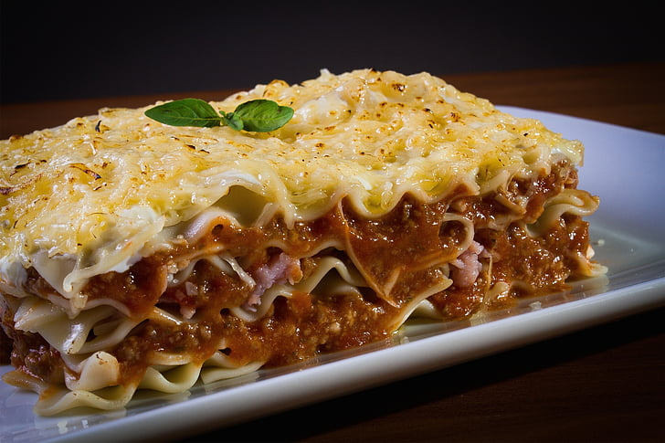

Lasagna

This is a lasagna recipe that you and your family will enjoy!
It is such a simple recipe you can have your kids watch and learn a long with you!
INGREDIENTS
- Lasagna noodles-oven ready
- 28 oz jar spaghetti sauce
- Ground beef-browned and drained
- 8oz ricotta cheese
- 16oz grated mozzarella cheese-divided
- 2 tbsp fresh parsley-optional
STEPS
- Preheat oven to 350 Degrees F
- Combine sauce and cooke ground beef into a warm-proof bowl
- Combine ricotta cheese and 8oz mozzarella cheese in a separate bowl
- Spoon and spread 1 cup of sauce and ground beef mixture on the bottom of an oven-safe dish
- Lay 3 lasagna noodle parallel to each other on top of the mixture
- Spoon 1 cup of sauce/beef mixture over the noodles
- Spread half of the cheese mixture on top of the sauce/beef mixture
- Repeat steps 5-7 one more time
- Lay 3 more lasagna noodles on top
- Spread the remaining sauce/beef mixture on top
- Spread the remaining mozzarella cheese on top
- Cover the dish with foil and place in the preheated oven for 45 minutes
- Using oven mits, remove the dish from the oven and let rest for 10 minute before enjoying!
Home